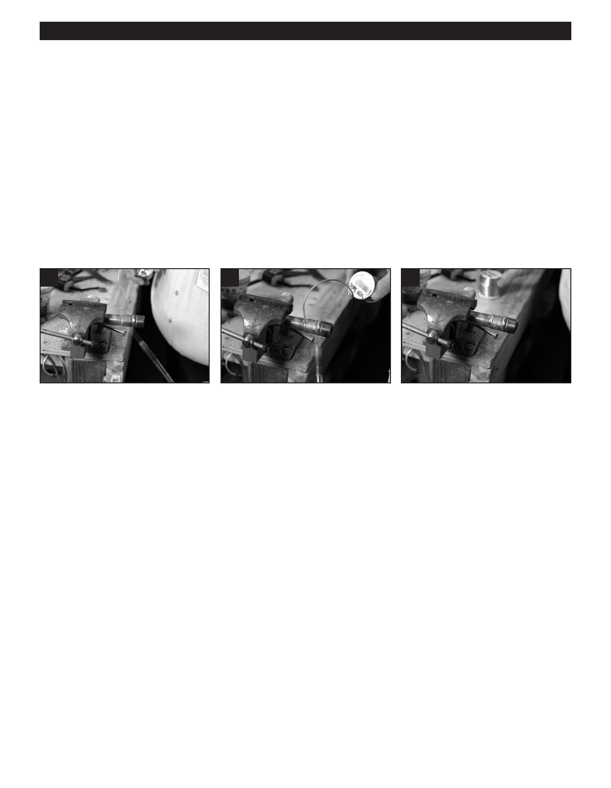

PA RT I C I PA N T R E S O U R C E G U I D E
Working with Pipes and Fittings (continued)
How to Solder Copper Pipe
A soldered pipe joint is made by heating a copper or metal fitting until it is just hot enough to melt metal solder. The heat
draws the solder into the gap between the fitting and the pipe to form a watertight seal.
1. Shut off water to pipe.
2. Cut pipe and file down sharp edges. (See “How to Cut Copper Pipe.”)
3. Sand the end of the pipe with an emery cloth or wire brush on the outside pipe and inside of the fitting.
Then wipe the pipe off.
4. Use a flux brush to paint flux (soldering paste) on the outside end of pipe and inside of the fitting.
5. Insert the fitting snugly onto pipe.
6. Light the torch. The flame should be no more than two inches long.
7
8
9
7. Heat the fitting and the pipe with
8. Place end of the solder to the edge
9. Let the pipe cool and clean off the
the flame.
of the fitting. If the solder melts, turn
extra solder. (Some solder
Note: the flame should be roughly
off the torch and press the solder all
will remain.)
75% on the fitting 25% on the pipe.
the way around the joint seam.
10. Inspect the joint visually. There should be a smooth, consistent “ring” of solder completely imbedded in the joint
around the pipe.
Parts List: - Pipe to be fitted
- Fitting (male pipe thread adapter shown)
- Flux (solder paste) with brush applicator
- Sanding cloth or wire brush
- Rag
- Propane or Mapp Gas Torch
- Soft solder (cabled for portable use)
Notes:
15